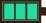

Cơ chế cốt lõi
❤️ Máu (Hearts)
Tóm tắt
- Bắt đầu với 3 tim.
- Mỗi Ánh Sáng Chúc Phúc (từ Đền Thờ Nhỏ): thu đủ 4 cái → đổi 1 Bình Máu hoặc 1 Bình Thể Lực tại Tượng Nữ Thần (trong đền hoặc đền thờ).
- Hồi máu: nấu đồ ăn (thịt + rau), dùng fairy, ngủ ở giường (khách sạn/stable).
- Gloom (vết đen trên đất) giảm máu tối đa tạm thời → nấu món "Sunny" (Sundelion) để hồi.
- Tim vàng (bonus) từ món ăn không nâng cấp vĩnh viễn.
⚡ Thể lực (Stamina)
- Dùng cho: leo, bơi, lướt (paraglider).
- Hồi tự nhiên khi đứng yên/không hành động.
- Nâng cấp bằng Ánh Sáng Chúc Phúc (đổi 4 → 1 Bình Thể Lực).
- Món hồi Thể Lực: Nấm Stamella, Cà Rốt Endura, thuốc Endura → hồi đầy hoặc tăng tạm.
- Leo khi mưa → trơn, tốn stamina nhiều hơn.
🌡️ Nhiệt độ
| Vùng | Vấn đề | Giải pháp |
|---|---|---|
| Hebra, núi cao | Lạnh → mất máu dần | Warm Doublet, Archaic Warm Greaves, món cay (Spicy Pepper + thịt) |
| Eldin, núi lửa | Nóng → mất máu | Bộ giáp Desert Voe, món mát (Hydromelon) |
| Gerudo sa mạc đêm | Lạnh | Đồ ấm |
HUD có icon nhiệt độ; game cảnh báo khi không đủ bảo vệ. Kiểm tra bằng temperature gauge.
🔋 Pin Zonai (Energy Cell)

- Dùng Thiết Bị Zonai (Quạt, Bánh Xe, Tên Lửa, Pháo…) tốn Pin Năng Lượng.
- Nâng cấp bằng Crystalizing Zonai (tại Forge Construct / Device Dispenser).
- Ban đầu 1 cell nhỏ. Thu thập Zonaite ở Depths để nâng.
- Zonai device lấy từ Device Dispenser (dùng Zonai Charge) hoặc nhặt trên map.
🕳️ Gloom & Depths
- Depths (Vực thẳm): thế giới ngầm tối, có Gloom.
- Cần Brightbloom Seed để chiếu sáng, Lightroot để mở bản đồ.
- Gloom giảm máu tối đa → nấu Sunny Veggie Rice Balls (Sundelion) hồi.
- Depths có quặng, Zonaite, miniboss, rương giá trị, Yiga, Construct.
- Mang Brightbloom nhiều; thắp Lightroot để mở map; dùng Mineru Construct (mở sau nhiệm vụ) để đi nhanh.
🌤️ Thời tiết
- Mưa: leo trơn (khó), sét đánh nếu mang vũ khí kim loại → cất đồ kim loại khi mưa sét.
- Tuyết/bão: khó nhìn, lạnh.
- Ngủ (lửa trại/giường) để đổi thời tiết.
- Một số nhiệm vụ yêu cầu đúng thời tiết (ví dụ: câu đố ở Cao nguyên Thundra vào giữa trưa).
🎮 Điều khiển (tóm tắt)
| Nút | Chức năng |
|---|---|
| Cần trái | Di chuyển |
| Cần phải | Xoay camera |
| A | Hành động/Nhặt/Nói |
| B | Huỷ/Quay lại |
| X | Nhảy (giữ)/Bay (Paraglider) |
| Y | Tấn công |
| ZL | Khiên/Parry |
| ZR | Cung/Ném |
| L | Vòng chọn năng lực |
| R | Dùng nhanh năng lực đã chọn |
| D-pad | Item/Map/Weapon |
| + / - | Menu / Bản đồ |
Mẹo: Giữ X khi rơi mở Paraglider. Nhấn ZL đúng lúc → Parry làm choáng kẻ địch.